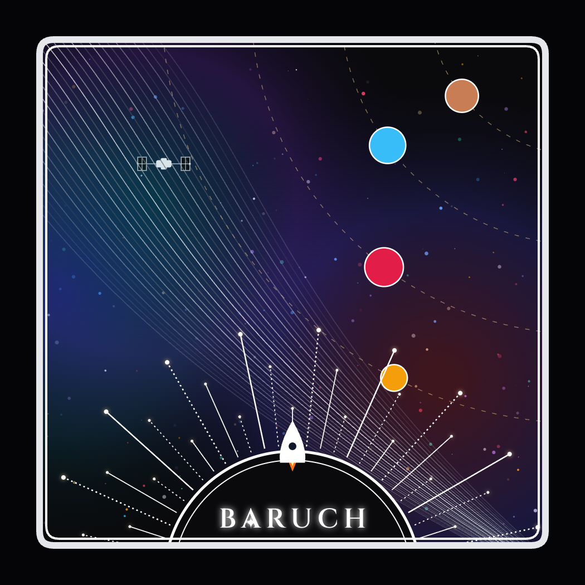

ARTIST STATEMENT
ESSAYThis Celestial mission patch represents Baruch’s active role in scientific Discovery, space research, and academic exploration beyond Earth's horizon. Encapsulated in a sleek, rounded Square patch frame, the design symbolizes how education serves as a launchpad for scientific and technological innovation. The Sun Dome and its rays, topped with an illuminated node pointing into the cosmos, represent the foundational research expanding into new fields of inquiry. In the center, the typography of Baruch symbolizes the spark of curiosity that drives students' research. The ascending rocket represents momentum and the journey of discovery during missions. The Milky Way and the ISS represent the microgravity research and human spaceflight. The planetary orbits symbolize deep-space autonomy and the search for exoplanets. This design reflects Baruch contribution to space research by bridging traditional academic study with modern aerospace technology. From laboratory experiments that form orbital science to data analysis that tracks astronomical phenomena, the patch serves as a badge of honor for students, faculty, and researchers venturing into new Frontiers of knowledge.
A.I. DISCLOSURE STATEMENT
TRANSPARENCYWere AI tools used during the development of this design?
Yes, AI tools were used collaboratively during the development of this project to assist with the layout prototyping and the background elements. We refined the composition by rendering the Victor geometric, particle twinkling blue, Dynamic Alberto curves, and custom typography. The final patch design was rendered directly from this tool.